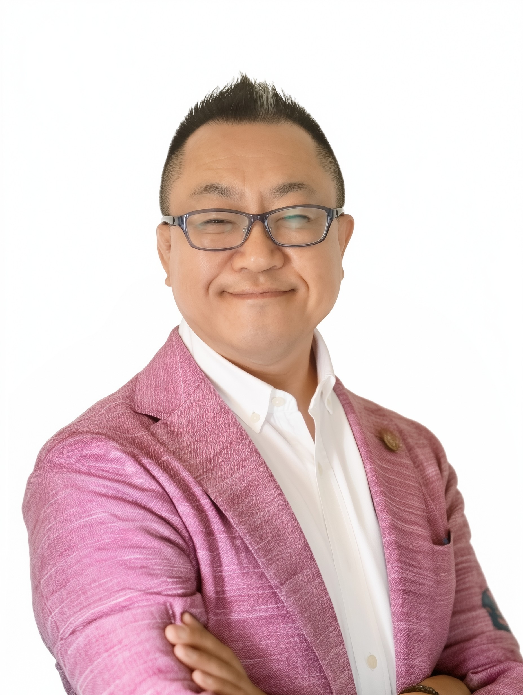

2027年1月〜3月・全3回 ／ JASS生成AI活用講座
気づきで暮らしも趣味も豊かに！生成AI活用講座
「はじめて使ってみたい」「もっと活かしたい」——そんな方へ。体験と気づきを通して、あなたらしいAIの使い方を見つける講座です。

定員30名→158名
この講座が大切にしていること
分からないを、「やってみたい」に。
難しい言葉は使わず、身近な例と実演で進めます。生成AIを暮らし、趣味、学び、創作に役立つ「身近な相棒」として、一緒に体験してみませんか。
まずは、知るところから
わかってスッキリ！生成AIの基本と可能性
JASS会員1,500円
一般2,000円
生成AIとは何か、検索との違いは何か。安全に使うための注意点から、暮らしや趣味に広がる可能性まで、講義とライブ実演を交えてやさしくご紹介します。
この回で学べること
- 生成AIの基本とインターネット検索との違い
- 安心して使うために知っておきたい注意点
- 調べもの・文章・画像づくりのライブ実演
- 第2・3回で使うGeminiアプリの一般的なインストール方法
お申し込み・お問い合わせ
参加してみたいと思ったら
講座は完全予約制です。JASS公式サイトで申込方法と最新情報をご確認ください。
申込時に必要な情報（第1回）
スマホで、会話してみよう
スマホで実践！AIを自分専用の相談相手に
JASS会員2,000円
一般2,500円
生成AIを、あなたの関心や悩みに寄り添う「自分専用の相談相手」に。暮らしや学びを題材に、欲しい答えを引き出す対話のコツをスマートフォンで体験します。
この回で学べること
- Geminiに質問するときの基本的な話しかけ方
- 自分の状況や希望を上手に伝えるコツ
- 暮らし・学び・趣味に役立つ相談の実践
- 回答をさらに良くするための会話の続け方
お申し込み・お問い合わせ
参加してみたいと思ったら
講座は完全予約制です。JASS公式サイトで申込方法と最新情報をご確認ください。
申込時に必要な情報（第2回）
思い描いたものを、かたちに
スマホで実践！生成AI画像を趣味に活かす
JASS会員2,000円
一般2,500円
生成AIで作った画像を、暮らしや趣味に活かす方法を発見します。活用例に触れながら、思い描いた画像を生み出すコツをスマートフォンで楽しく体験します。
この回で学べること
- 生成AI画像でできることと身近な活用例
- イメージを言葉で伝えるシンプルなコツ
- 画像を作りながら希望に近づける方法
- 趣味や創作に取り入れるアイデア
お申し込み・お問い合わせ
参加してみたいと思ったら
講座は完全予約制です。JASS公式サイトで申込方法と最新情報をご確認ください。
申込時に必要な情報（第3回）
全回共通のご案内
お申し込みの流れ
各講座の実施日の12日前までにお手続きください。
お申し込み後、約1週間で結果と支払い方法をご案内します。
ご案内に沿って参加費をお支払いください。
持ち物をご確認のうえ、会場へお越しください。
JASSとは？
日本セカンドライフ協会（JASS）は、サラリーマンOB・OGの「生きがい」づくりを支援するため、多くの企業・団体の参加を得て発足した組織です。
JASS企業会員以外でも参加できますか？
「JASS友の会」への入会、または空きがあるイベントへビジター制度で参加できます。詳しい条件と申込状況はJASS公式サイトでご確認ください。
初めてでも大丈夫ですか？
はい。難しい技術をかみ砕いて伝えてきた講師が、シニアの方にも分かりやすい言葉でやさしく進めます。
会場はどこですか？
全回とも「かながわ県民センター」です。第3回の部屋番号は決まり次第ご案内します。
お申し込み・お問い合わせ
参加してみたいと思ったら
講座は完全予約制です。JASS公式サイトで申込方法と最新情報をご確認ください。
申込時に必要な情報